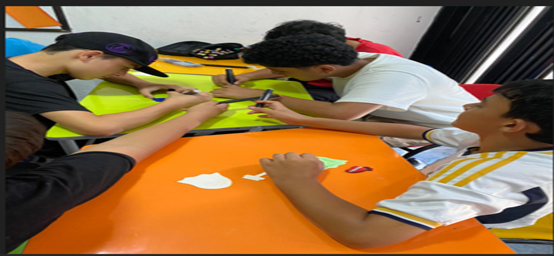
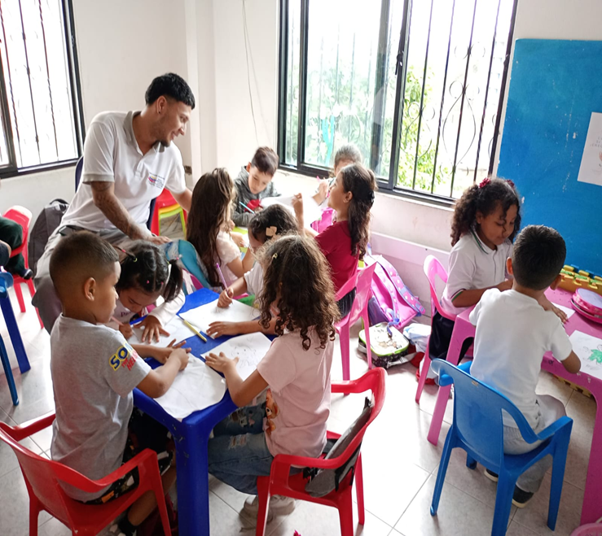

Bienvenido
La Fundación SIDOC en colaboración con la Escuela Nacional del Deporte te da la bienvenida a este espacio de orientación y fortalecimiento de habilidades personales.
A través del Test de Holland podrás descubrir intereses, capacidades y áreas vocacionales que permitirán potenciar el desarrollo integral de niños, niñas y jóvenes.
Explora nuestros contenidos informativos y conoce más sobre las diferentes habilidades y perfiles ocupacionales.

